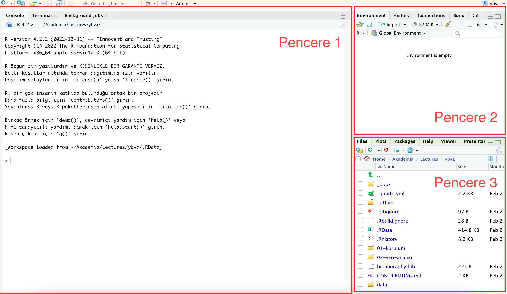

34 + 45[1] 79Şu anda kadar büyük ihtimalle grafiksel arabilirmleri olan Microsoft Word ve Microsoft Excel gibi ofis programları ile çalıştınız muhtemelen. Bu programalar bir çok noktada işe yarasa da, ilerleyen kısımlarda göreceğimiz üzere, büyük kapasiteli verilerle çalışmaya uygun değildir.
Bu ders boyunca, yeni bir çalışma sistemi ile haşır neşir olacağız. Eski bilgilerimizin ve eski alışkanlıklarımızın bazılarını unutmamız ve yenilerine yer açmamız gerekecektir.
Kullanacağımız programların dik bir öğrenme eğrisi bulunmaktadır. Yani, gerçekten işe yarar bir şeyler yapabilmeniz için bir süre boyunca (3 - 4 hafta kadar) yoğun bir çalışma yapmanız ve kullan programların mantıklarını kavramanız gerekir.
Ancak bir kere bu çalışma sistemini kavradığınızda, sonraki adımlar daha kolay hale gelecektir. Mesela Şekil 3.1, anlattıklarımın bir özeti aslında. Biraz gözünüzü korkuttum kabul ediyorum…

Ancak her işe iyi tarafından bakalım. Veri analizi, yoğun bir biçimde döküman formatı değiştirme ve tekrarlı işlemler içeren bir işlemler bütünüdür. Microsoft Excel gibi bir araçlar bu analiz adımlarını ancak belli bir noktaya kadar sürdürebilirsiniz. Özellikle Bölüm 5’de belirtileceği üzere, yaşam bilimlerindeki veri miktarı artık küçük çapılı araçların altından kalkamayacağı bir seviyeye gelmiş bulunmaktadır. Bir noktadan sonra, tekrarlı işler için harcayacağınız zaman git gide artacaktır (Şekil 3.2).

Kafanız biraz karıştı farkediyorum. Ancak sürece güvenin. Unutmayın, hayatta önemli olan aslında süreçtir…
Eğer Bölüm 1 bölümündeki adımları tam olarak takip ettiyseniz, R ve Rstudio programlarını kurmuş olmanız gerek. Eğer programları kurmadıysanız şimdi Bölüm 1 kısmına geri dönerek, gerekli işlemleri yapınız.
Programları tam olarak kurduysanız, Şekil 3.3’da göreceğiniz bir ekran karşınıza çıkmalı. Gelin bu ekranı inceleyelim:

**Yanıp sönen imleç artık komutunuzu bekliyor!
Komut satırı ekranında yanıp sönen bir imleç var. O imleç sizin komutunuzu bekliyor artık. R ile bu pencere üzerinden etkileşeceğiz. Siz bir komut yazacaksınız, R bu komutu işleyecek, ve sonucu geri döndürecek.
Eğer imleç yanıp sönmüyorsa, R o sırada bir işle uğraşıyor demektir. İşin bitmesini bekleyiniz.
Komut satırı ekranını mesela bir hesap makinası olarak kullanabilirsiniz. Mesela:
34 + 45[1] 79R, bu işlemi yapar ve sonucu ekrana yazdırır.
İsterseniz başka işlemler de yapabilirsiniz:
12/4[1] 3Parantezli işlemler deneyelim:
((6+5)*(12+6))/4[1] 49.5Tebrikler! R üzerinde ilk komutlarınızı yazdınız!